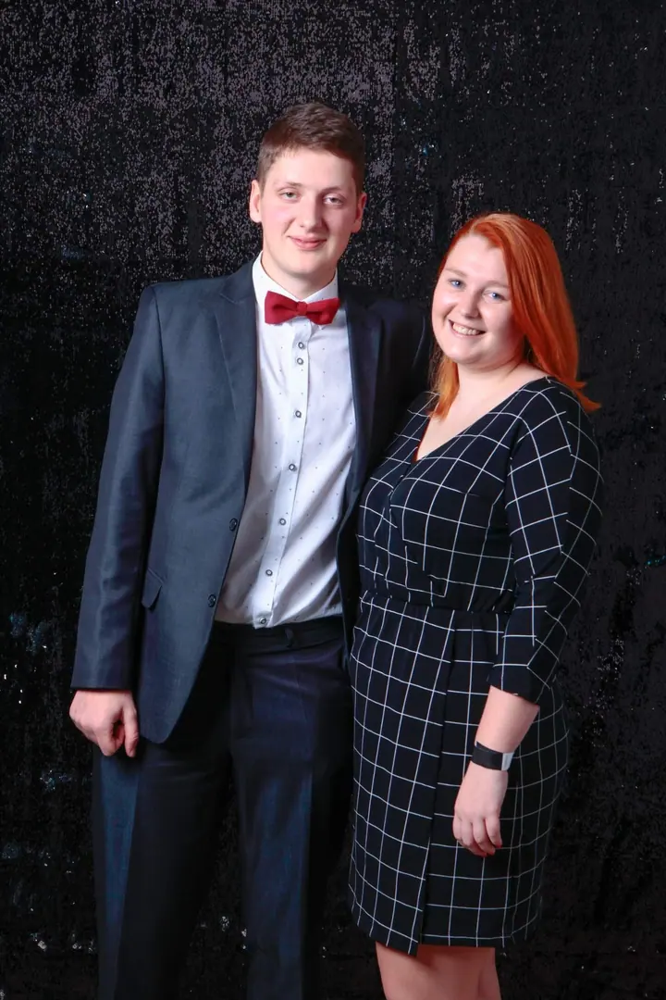
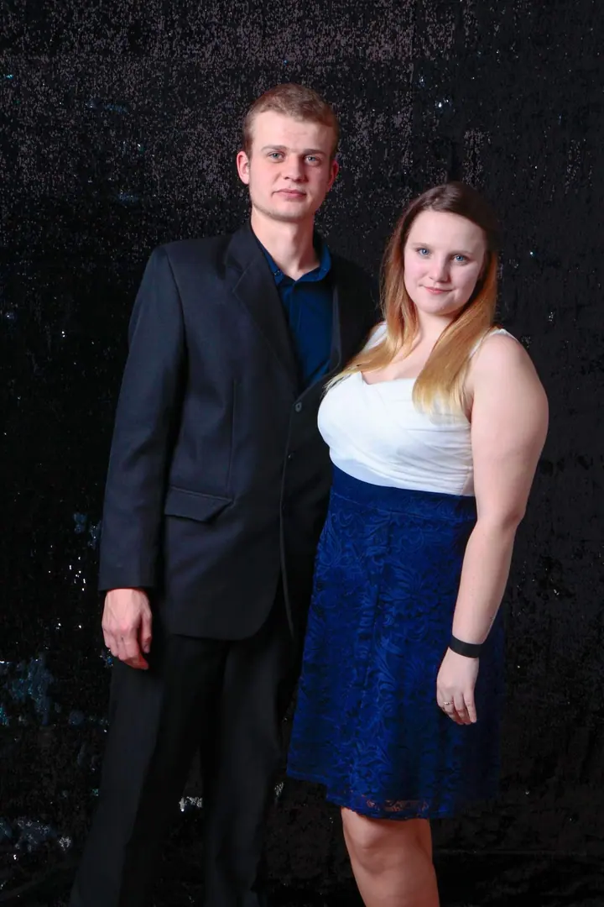
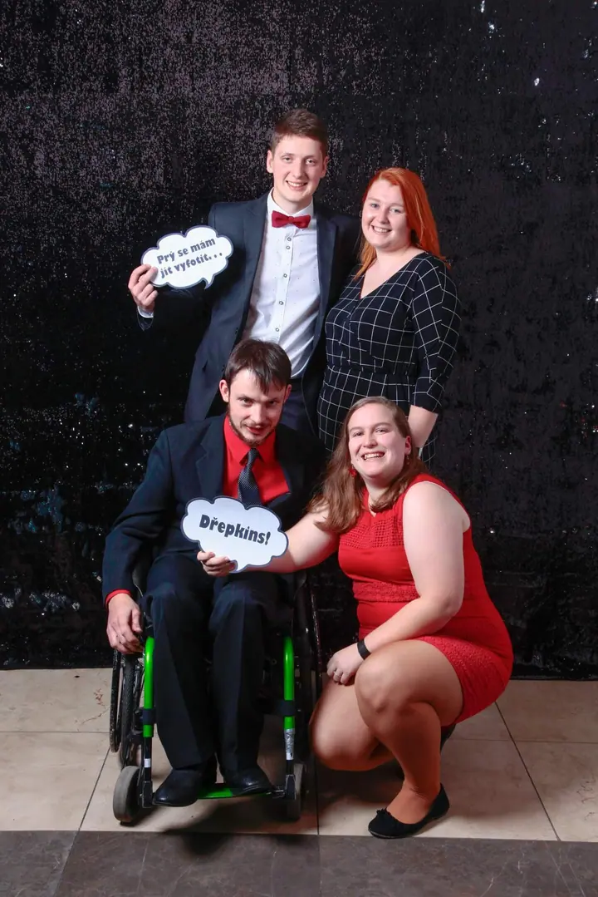
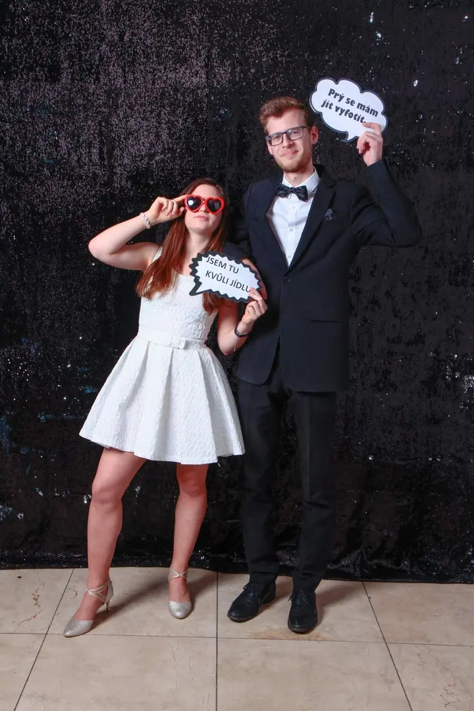
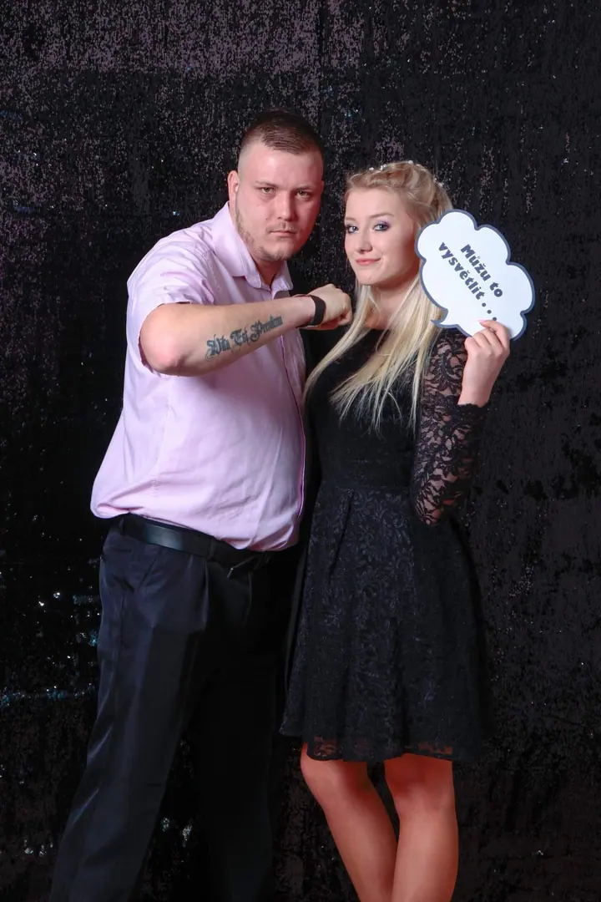
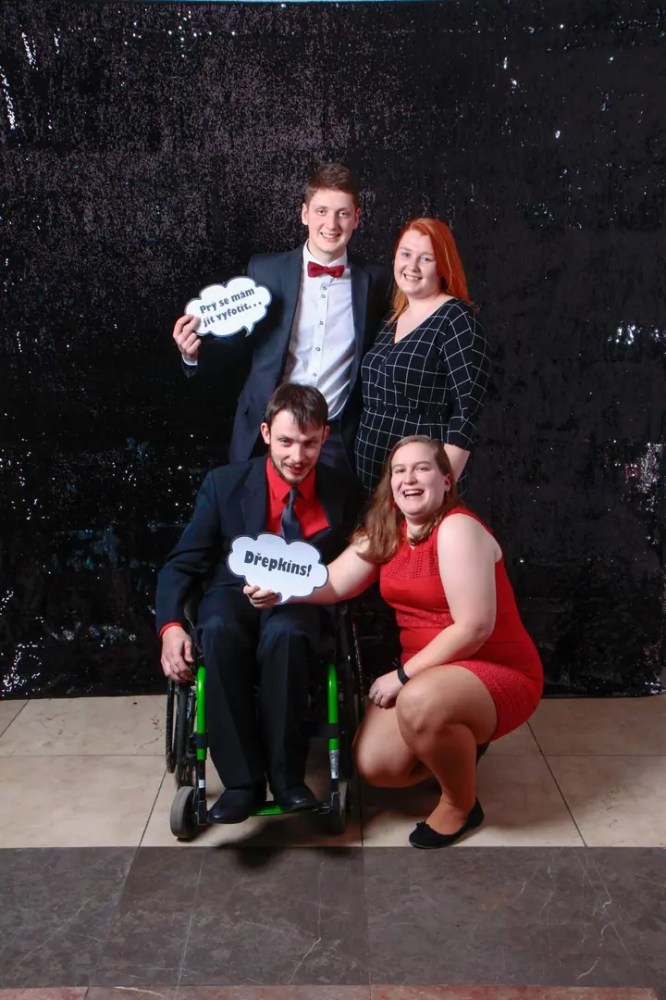
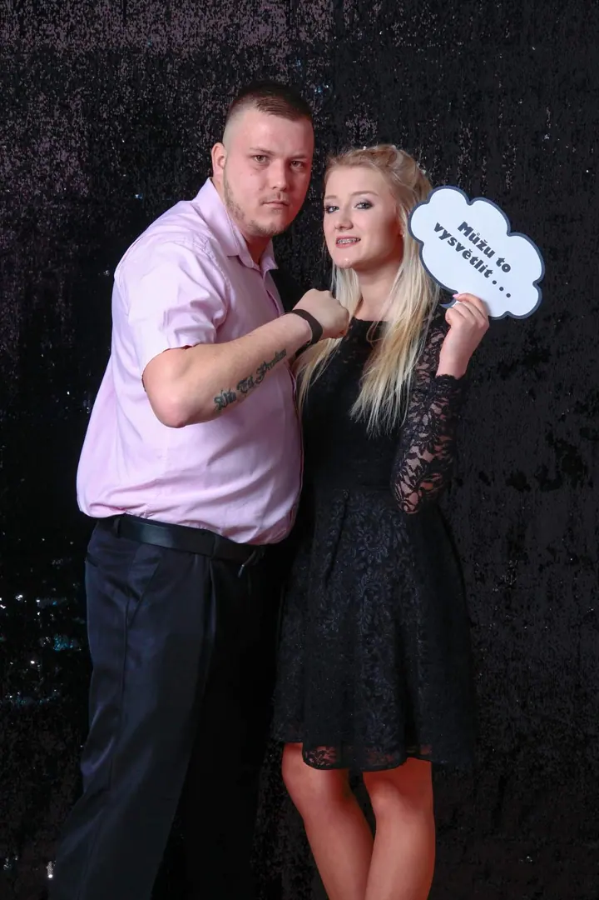
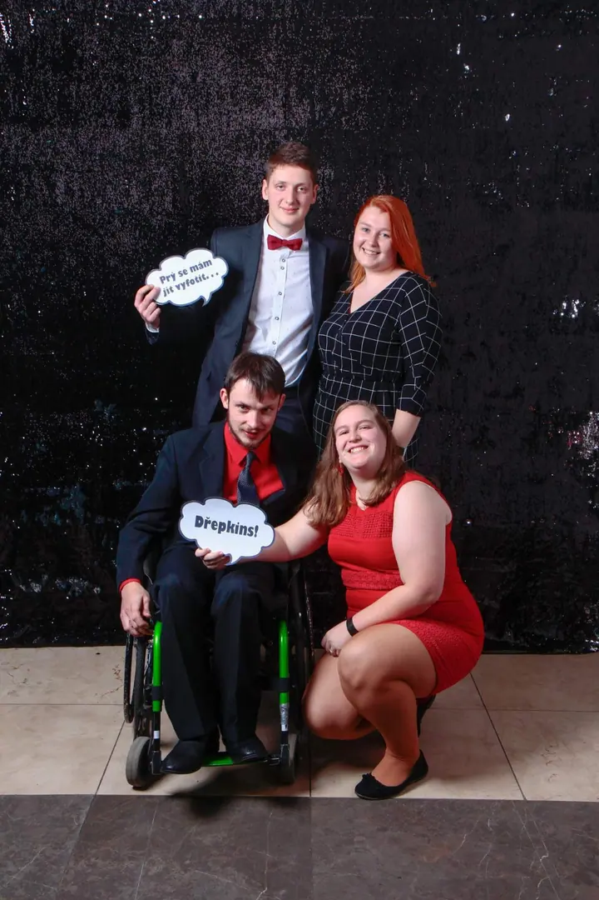

01 / 04
Rodinné, dětské a párové focení
Fotím rodiny, děti, páry i portréty ve svém ateliéru ve středu Pardubic nebo venku v přírodě. Pro focení venku mám časové balíčky, ze kterých dostanete všechny fotky, které nafotíme.
Zeptat se na termín→







Rodinný a svatební fotograf v Pardubicích
Zeptat se na termín →(01) Ahoj
Jmenuji se Miroslav Beneda a jsem váš rodinný a svatební fotograf z Pardubic. Fotím ve vlastním ateliéru ve středu města nebo venku v přírodě , podle toho, co je vám bližší.
(02) Co fotím
01 / 04
Fotím rodiny, děti, páry i portréty ve svém ateliéru ve středu Pardubic nebo venku v přírodě. Pro focení venku mám časové balíčky, ze kterých dostanete všechny fotky, které nafotíme.
Zeptat se na termín→Dále nabízím
Nabízím tři svatební sety, od obřadu s focením novomanželů až po celý den od rána do noci. Neomezuji počet fotografií ani počet hodin focení a před svatbou se spolu vždy osobně setkáme.
↗Těhotenství fotím obvykle od 28. týdne až do porodu, v ateliéru nebo v přírodě kolem Pardubic. Během focení můžete až třikrát změnit outfit a v ateliéru i fotopozadí.
↗Prodáváte nebo pronajímáte byt či dům, nebo jste realitní makléř? Dobré fotky pomohou nemovitost prodat dřív a za lepší cenu, případně přilákají spolehlivého nájemce.
↗(04) Postup
Od první zprávy po hotovou galerii.
Krok 1 z 4
Rád s vámi posedím a popovídám si o focení. Poznáme se, vyslechnu si vaše přání a doporučím vám nabídku na míru.
Krok 2 z 4
Vyberete si svatební set nebo časový balíček pro focení venku. Svatbu klidně rezervujte i rok dopředu, později už nemusím mít ve vašem termínu volno.
Krok 3 z 4
Vy si den užijte a starosti s focením nechte na mně. Nehlídám hodinky a nepočítám snímky.
Krok 4 z 4
Dostanete všechny povedené fotky upravené a k tomu výběr těch nejlepších, retušovaných i v černobílé verzi. Stáhnete si je jedním kliknutím na odkaz v e-mailu, u svatby je dostanete i na flash disku.
Vy si svůj den užijte, focení nechte na mně.
(05) Za objektivem
Fotím svatby, rodiny, páry, děti, těhotenské bříško i miminka. Rád se stanu vaším rodinným fotografem a budu fotit vaše životní příběhy, a je úplně jedno, jak to nakonec nazveme.
Na pózování klidně zapomeňte. Mám raději moderní a zábavnější přístup, díky kterému budete na fotkách vypadat přirozeně a fotky budou živé. Focení tak nemusí být otrava ani pro chlapy. A pokud už máte děti, tím líp, miluji děti a myslím, že to vycítí. Vždycky jsme pak kamarádi.
Můj ateliér najdete na Třídě Míru v centru Pardubic. Má bezbariérový vstup s výtahem a parkovat můžete hned za ním. Hraju fér od začátku, takže všechny ceny najdete na webu, nic neschovávám.
Miroslav
Miroslav Beneda · Rodinný a svatební fotograf
Svatební sety začínají na 9 600 Kč za obřad a focení novomanželů. Půlden od obřadu do večera stojí 15 300 Kč a celý den 20 900 Kč. V ceně jsou i vytištěné fotografie.
Ne. Neomezuji dobu focení ani počet fotografií. Ze svatby dostanete všechny povedené záběry, často je jich přes tisíc.
Obvykle fotím od 28. týdne až do porodu, v každém ročním období. Záleží jen na vás, jak velké bříško chcete mít na fotkách.
Časové balíčky začínají na 2 000 Kč za 30 minut a pět upravených fotek. Všechny nafocené snímky dostanete v elektronické podobě. Pardubice a okolí do 10 km jezdím zdarma.
Vchod není z Třídy Míru, ale z druhé strany domu. Do navigace zadejte Pardubice, Na hrádku 136 a zaparkovat můžete v parkovacím domě GRANd hned za ateliérem. Vstup je bezbariérový s výtahem.
(07) Kontakt
Napište pár vět o tom, co si představujete, a termín, který se vám hodí.
benedamiroslav@seznam.cz